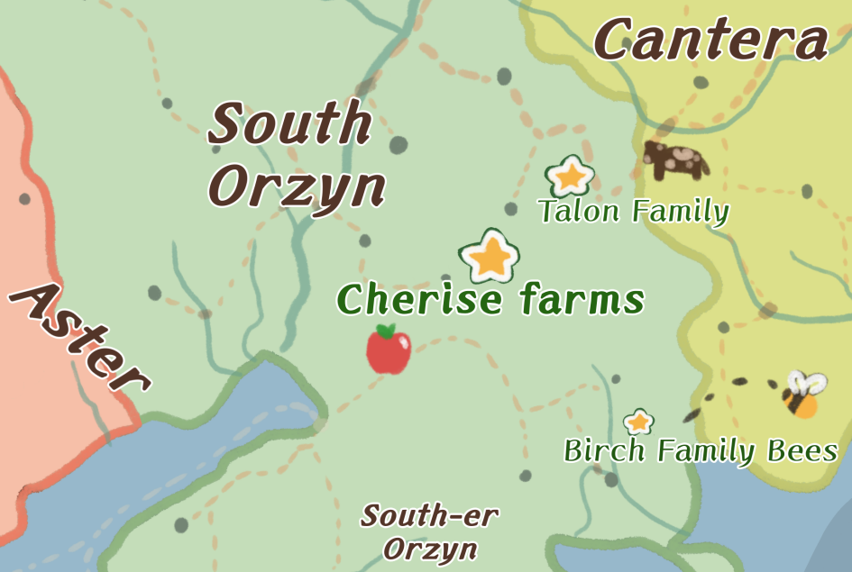

Zionna Brown, Fall 2024, Creative Example 1 Supplemental: Adventure Guide
╰────────── ⋅ ⋅ ── ✩ ── ⋅ ⋅ ──────────╮
Cherise Farms
A Gamemaster Guide
Contents:
- Locations
- The Farm
- The House
- Magic System
- Cherise Tools
- Changeling Imitation
- Family
- Family Tree
- Immediate Family
- Extended Family
- Memory Finding Guide
- People
- The House
- The Farm
╰────────── ⋅ ⋅ ── ✩ ── ⋅ ⋅ ──────────╮
The Farm:

The House:
╰────────── ⋅ ⋅ ── ✩ ── ⋅ ⋅ ──────────╮
Cherise Magic Tools:
Like many magic-bearing families, the Cherise’s have a style that is passed down genetically. It is linked back as far as Great Grandma Kara Cherise, who was from the Kingdom of Aster and married a farmer by the name of Jonas Cherise Sr.. It is unknown what Kara’s surname was before marriage.
Because it is genetically passed, people who marry into the family do not inherit the trait. Some children may not get the trait, despite being genetically linked. This isn’t a very common occurrence.
The Cherise Style magic manifests as farm tools, meant to aid the family in their success. Only one tool is assigned to a person, the tool they will be able to summon for the rest of their lives. Although, more than one person can have the same tool (ex. Porridge and Great Aunt Felicity share a spade.) These tools are usually strong and elegantly designed to perform their jobs efficiently. They also manifest as a bright green, though there are variations of this (The Talon’s have a dark green, while the Birch’s have teal. It can vary by person.)
The tools manifest at a young age, around 4 to 6. If it isn’t found by then, it’s usually safe to assume that the child does not possess that style of magic. Sometimes, when first summoned, it will be a warped version of what it’s meant to be (i.e. bent, smaller than usual, with strange proportions). This will smooth out quickly over time.
The only case of this not happening is with Avril Cherise, whose tool manifests as a stick. A straight rod. This would be useful if other items could be affixed to the end like a shovel, hoe, or pitchfork head. These items do not stick, however, making this magic tool nearly useless. This is the first occasion of a tool lacking the elegance of design or aid to the family.
(The reason for this is that her magic style is imitation. Her changeling qualities and fae magic acclimated as soon as she was placed into the family for her to blend in seamlessly. Because Cherise magic is a genetic trait, there is no way that she would be able to inherit the tools the Cherise ancestors blessed the family with. A single green rod is all the imitation can muster.)
The Family Tree:
╰────────── ⋅ ⋅ ── ✩ ── ⋅ ⋅ ──────────╮
The family that lives at home on the main Cherise Farm.
Mama (Molly C.) - Current owner of Cherise Farms. A woman strong of heart and strong of arm. She does the heavy lifting and a lot of the fieldwork. She believes in standing her ground without compromise. She will have a stern talking to with anyone she believes is dangerous to the family (the party is going to have a fun meeting with her I think. She will not like Justine). In the past, she used to deal with people she didn’t like with a hard punch but has grown since then. Tool: Hand plow
Pops (Char C.) - Marrying Molly Cherise was the best idea he ever had, and his folks agree. Being an only child, this large bustling family was an exciting change of pace. A bit more of a quiet and loving type, he usually sits back and watches conversations happen, putting in his two copper where it matters. He takes his time to think and plans out each year for the farm regarding layout, planting times, weather prediction, and general business. Tool: None
Cassie C. - (28) - Sarcastic and very open about her feelings, though is a little too embarrassed to admit that she’d like to find love like her older brother Sebastian. She believes it’s too late for that, despite only being 28. Brutally honest, but has good enough sense to know when to stop joking. Loves to tease, unbiased on who she teases. No one is safe! (Would LOVE to meet Isella and talk fashion!) Tool: Hoe
Carries around a bucket to hold things he likes, and wears it on his head sometimes when it’s empty. Started talking before turning 2, a quick learner! Helps the family plant seeds, his favorite part. Pops is very protective of Porridge. Wherever he goes, he follows close behind. Doesn’t keep him from the natural dangers of being a child (falling, touching things he shouldn’t, heavy stuff), but rather keeps an eye on him. He doesn’t want to lose another child to the forest. Tool: Spade ╰────────── ⋅ ⋅ ── ✩ ── ⋅ ⋅ ──────────╮ Currently staying at the Cherise family home on the farm! Sebastian’s Family: Sebastian C. - (33) - A quieter sibling of Avril, he takes after his father. He loves to spend his alone time contemplating and reading. His “alone-time walks” led him to find Chloe and her family while out picnicking, and they became fast friends at ages 9 and 10. They married at age 25, and have been married for 8 years now. He knows Avril is a changeling. As the eldest sibling and a father himself, Pops knew he had to warn Seb. Tool: Watering Tin Chloe C. - (34) - Married Sebastian, and they dated for many years as childhood sweethearts. Very creative and intelligent, she loves to paint. The Cherise family loves her and is very glad that they have joined their family. She is ever so grateful to find their company and is glad that Sebastian likes to take things as slow as she does.
Leah C. - (1) - The baby of Chloe and Sebastian :) She’s very loud!!! Despite her quiet parents. Truly a joy. Itty bitty bundle. Tool: (?) shes baby! Pops (Char)’s Side: (no last name they are weird!) Grand Torrin - A retired adventurer known for his use of a giant battle ax! Quite witty and loves music. Everyone loves Grandpa Torrin, he’s fun to listen to. His favorite story to tell is about his trip to the fictional dancing city of Pirou. He began adventuring after the end of the last Orzyn war, starting by helping people get back on their feet by doing tasks and being hired to move goods and people. Known for his goodwill, he was a big contributor to guilds all around. Avril looks up to him, and his stories inspired her to leave home and explore the world for herself.
Nana Gwendolyne - A retired field nurse! Met Torrin during the war, found each other again 5 years later, and married <3 Doesn’t talk anymore, and loves to rock back and forth. Only says “no!” really meanly or laughs very loudly, no in-between. Currently in the care of the Cherise’s (Mama and Pops on the farm) with Torrin. ╰────────── ⋅ ⋅ ── ✩ ── ⋅ ⋅ ──────────╮ Out and about! Avril C. - (19) - Trying out adventuring like her Grandpa Torrin, hoping to find an occupation, and find her tool’s true shape. Tool: Stick… Morine T. - (DECEASED AT 25) - Haunting Avril, attempting to become real again. Tool: Scythe (?) ▇▇▇▇▇▇ - (?) - ▇▇▇▇▇▇▇▇▇▇▇▇ ▇▇▇ ▇▇▇▇ ▇▇▇▇▇▇ ▇▇▇▇▇ ▇▇▇▇ Last seen by the Eastward Woods 19 years ago. Tool: Handsaw ╰────────── ⋅ ⋅ ── ✩ ── ⋅ ⋅ ──────────╮ Owns an animal farm North of Cherise Farms. About an hour and a half cart ride between. A miserable family, falling apart at every seam. Uncle Jonas T. - Didn’t quite fit with the warm Cherise family, and was drawn to the stark and brutally honest Talons. Tool: Ax Auntie Julia T. - A cold woman. Stays inside and handles finances of Cherise Farms. One of those moms that lick their thumb and scrub off the dirt from a kid’s face. Mori hates this. Morine T. (DECEASED AT 25) - Tool: Scythe (Missing) Quinn T. (DECEASED AT 22) - Married into the Talon Family. A carpenter by trade, they originally met because her family was contracted to make new barns for the farm. Married quite young to Mori a year later, with Aslana as the flower girl. Avril liked her, so she was probably funny and pretty. Aslana T. - ( 21) - Quite a sad girl, for obvious reasons. Despite the Cherise family attempting to take her out for trips, her feelings don’t change. The Talon family is not one to deal with emotional problems. Her parents ignore her depression and almost ignore her entirely. Distracts herself with her work. The chickens are her favorite company. Tool: Hay Fork ╰────────── ⋅ ⋅ ── ✩ ── ⋅ ⋅ ──────────╮ Listed are locations with events pertaining to the character Pops - Porch, Kitchen, Living Room, Master Bedroom, Porridge’s Room, Treehouse, Autumn Crop/East Woods Mama - Porch, Foyer, Kitchen, Living Room, Master Bedroom, Mudroom, Twin Room, Shed, Field Cassie - Living Room, Double Bed, Cassie’s Room, Twin Room, Treehouse, Apple Orchard Porridge - Porridge’s Room, Treehouse Sebastian - Kitchen, Living Room, Double Bed, Storage Area, Shed
Chloe - Double Bed, Storage Area Grand Torrin - Their past is up to you! Nana Gwendolynn - Their past is up to you! Mori - Kitchen, Living Room, Porridge’s Room, Apple Orchard, Shed Downstairs Porch Foyer
Kitchen Avril bumps the table and knocks over a jar of barley grains. The glass shatters on the floor, flinging barely all over the floor. A few seconds of silence, Avril froze in place. Asher and Mori look at each other, their jovial mood cut to a halt. Avril screams a little as she loses count and restarts from 1. Mori stands at the counter as Asher kneels down to help. Though, as soon as he touches a grain, she shouts at him. It’s gibberish through her sobbing. He backs off and she starts right back at 1 again. Mori puffs and leaves the room, bored. Living Room Master Bedroom Mudroom Stairwell Upstairs Nursery GM note: The room is unchanged. This is Avril, not the first girl. This happens the next night. If inspected by A.T, it is up to you if there are any differences. Double Bed (Chloe and Seb’s old Room) Cassie’s Room Twin Room Porridge/Avril’s old room Treehouse Apple Orchard Storage Area (Middle of the farm) Shed (Southeast past Summer crops) Two of the grain bags are very close together, “dancing,” and Avril gossips about them to the other guests. She has a jar of apple juice she sips very fancily. Pinky out! With no windows, it's completely dark with the door shut. Avril tries to summon her tool because she knows it emits some sort of light, but is unable to because of how distressed she is. Any field Autumn Crop Field / Eastward Woods
The top of the fence, however, has long nails struck through and pointed straight up. No one would be able to hop on this fence without getting cut. (GM Note: no other fences on the farm have this feature!)
The Immediate Family:
Porridge C. - (4) - Changes his name every few months or whenever he has a whim. The name is always on theme with different kinds of soup. (Despite porridge not being a soup, you cannot tell him otherwise.) The Visiting Family:
The Traveling Family:
The Talon Family:
Memory Magic Guide
People:
Avril - Foyer, Kitchen, Living Room, Nursery, Cassie’s Room, Twin Room, Porridge’s Room, Apple Orchard, Shed, Autumn Crop/East WoodsHouse:
“Avril-” Asher says, but she lunges to the ground, counting the grains one by one.
Mori laughs and asks what the hell she’s doing, but Asher looks sadly at him and tells him to shut up. Mori does, as Asher never uses harsh words unless necessary.
“No, no, Molly I can’t. I’m sorry.”
She hugs him tighter.
(This is the first girl, NOT Avril)Farm:
The treehouse itself is not that high up, only 2 ladder steps up.